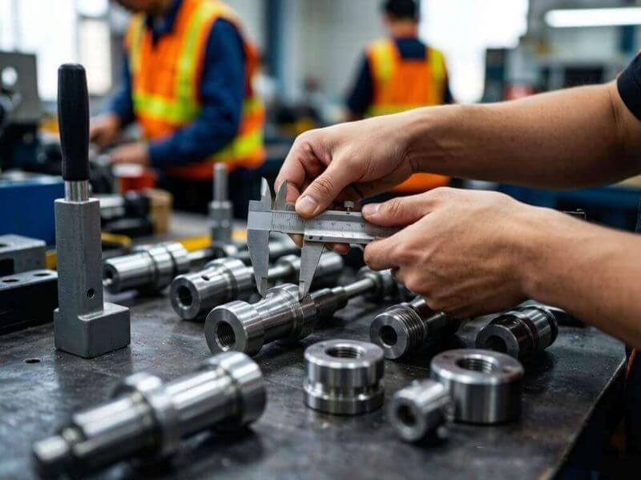
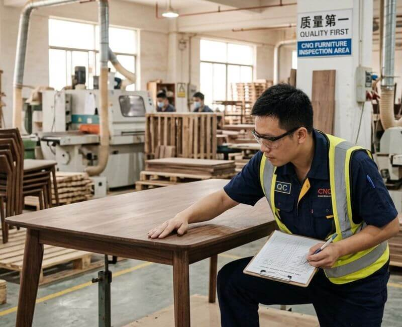
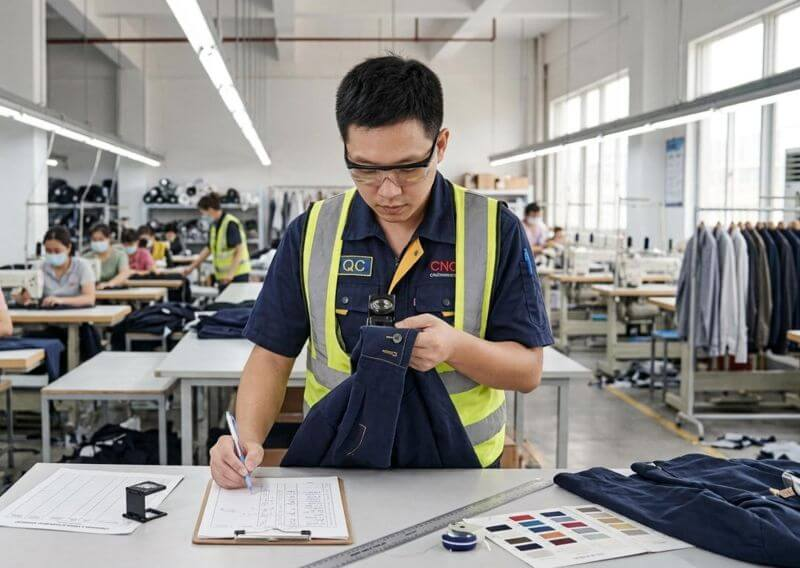

Product Inspection Services — Your Eyes in China
Initial Production Check (IPC)
Inspect raw materials, components and first-piece products at the production startup stage to ensure production conditions meet requirements, identify potential issues early, and avoid batch defects.
- Raw material and component inspection
- Production equipment and process audit
- First article sample confirmation
During Production Inspection (DPI)
Conduct random sampling inspection when 20%-30% of production is complete, timely identify quality issues in the production process, and assist factories with process improvement.
- AQL random sampling inspection
- Production process audit
- Issue feedback and improvement suggestions

Pre-Shipment Inspection (PSI)
Conduct final random sampling inspection after 100% production completion and packaging readiness, ensuring the entire shipment meets client requirements and contract specifications.
- Appearance and workmanship quality check
- Function and safety performance testing
- Packaging and labeling inspection
- Issue detailed inspection report

Full Inspection (100% Inspection)
100% piece-by-piece inspection of the entire batch, suitable for high-value products, precision instruments, or high-risk orders with specific client requirements.

Container Loading Supervision (CLS)
Station inspectors on-site during container loading to ensure product quantity, packaging method, loading sequence and container condition meet requirements, preventing misloading or missed loading, and safeguarding cargo transportation safety.
- Container condition check (clean, dry, undamaged)
- Cargo quantity and specification verification
- Loading process supervision and documentation
- Container sealing and seal number recording
Factory Audit Services
Quality Management System Audit (QMS)
Conduct comprehensive audits of factory quality management systems based on ISO 9001 standards, assessing quality management capabilities, process control levels and continuous improvement mechanisms.
Social Compliance Audit
Referencing international standards such as SA8000, BSCI, SMETA, conduct audits on factory labor practices, health & safety, and environmental protection.
Production Capacity Assessment
Comprehensively assess factory production equipment, processes, capacity scale and delivery capability, helping clients determine if suppliers have order fulfillment capability.
C-TPAT Security Audit
Audit factory physical security, personnel security and procedural security based on C-TPAT standards, meeting US Customs supply chain security requirements.
Laboratory Testing
Through our strategic laboratory partnerships in China, we provide comprehensive product testing services:
Physical Performance Testing
Tensile strength, abrasion resistance, hardness, impact testing and other mechanical property tests.
Chemical Composition Analysis
RoHS, REACH, heavy metal content, phthalates and other hazardous substance testing.
Safety Performance Testing
Electrical safety, flammability testing, mechanical protection and other safety standard compliance testing.
Food Contact Material Testing
Migration testing for food contact materials compliant with EU, FDA, GB and other standards.
Textile Testing
Color fastness, shrinkage rate, formaldehyde content, azo dyes and other textile-specific tests.
Toy Safety Testing
EN71, ASTM F963, GB 6675 and other international toy safety standard testing.
Supplier Management
Help enterprises establish comprehensive supplier assessment and management systems:
- New supplier qualification assessment and factory audit
- Regular performance evaluation of existing suppliers
- Supplier tiered management plan development
- Supplier capability improvement and training
- Supply chain risk early warning and control
- Supplier database construction and maintenance
Technical Consulting
Provide professional technical consulting services to help improve quality management:
- Product technical standard interpretation and development
- Quality management system establishment and optimization
- Inspection plan and sampling plan design
- Non-conforming product handling and corrective/preventive actions
- Supplier quality management training
- Production process quality control solutions
International Compliance Services
Help enterprises navigate regulatory requirements of different markets and successfully enter global markets:
EU Market
CE certification, RoHS Directive, REACH Regulation, WEEE Directive, EN standard compliance assessment.
North American Market
FDA registration, FCC certification, UL/cUL certification, ASTM standards, CPSIA compliance.
Other Markets
China CCC certification, Japan PSE certification, Australia RCM certification, Middle East GCC certification, etc.
Regulatory Tracking
Continuously track regulatory updates across countries, providing timely compliance advice and response plans for clients.
Frequently Asked Questions
Product Inspection: $179/man-day.
Factory Assessment:
- Swift Audit: $199/factory (Focused verification).
- Comprehensive Evaluation: $268/factory (Deep-dive capability & infrastructure check).
Leveraging our deep expertise in China's industrial landscape, we provide specialized product inspection and quality control support to mitigate risks for these categories:
- ✅ Textile & Garments
- ✅ KD Furniture
- ✅ Garden & Outdoor
- ✅ Consumer Electronics
- ✅ Gifts & Premiums
- ✅ Bags & Storage
- ✅ Toys
- ✅ Seasonal Decor
- ✅ Kitchenware
- And many more consumer products...
We strictly conduct our product inspections in China based on the international AQL (Acceptable Quality Limit) standard, specifically utilizing the ANSI/ASQ Z1.4 (or ISO 2859-1) sampling plans. By default, we apply General Inspection Level II with standard sampling tables to determine the exact sample size for your lot. This ensures that the inspection results are statistically valid, mathematically sound, and fully recognized by global retail chains and compliance auditors.
We follow standard international QA protocols to classify findings into three distinct levels:
- Critical Defects: Issues that fail safety regulations or present potential hazards to the end-user (e.g., sharp metal edges, exposed wiring).
- Major Defects: Deficiencies that reduce the usability or salability of the product (e.g., structural cracks, severe color bleeding, misaligned components).
- Minor Defects: Workmanship imperfections that do not affect function or safety but deviate from the specifications (e.g., minor flashes on handles, loose threads).
We provide nationwide on-site inspection coverage across all major manufacturing hubs in Mainland China. Our technicians regularly visit factories in Guangdong (Shenzhen, Guangzhou, Dongguan), Zhejiang (Ningbo, Yiwu, Hangzhou), Fujian (Xiamen, Fuzhou), Jiangsu, and Shandong provinces. No matter where your supplier is located, we can deploy a local inspector to the factory floor promptly.
Integrity is our absolute bottom line. As professional engineers, we enforce a strict Zero-Tolerance Anti-Bribery and Code of Ethics Policy. Every technician signs a binding integrity agreement before stepping onto a factory floor. We perform independent, impartial cross-checks on all inspection reports, ensuring that what you see in the report is 100% representative of the actual cargo.
We offer an end-to-end quality assurance suite to safeguard your supply chain:
- Pre-Shipment Inspection (PSI)
- During Production Inspection (DPI)
- Pre-Production Inspection (PPI)
- Production Monitoring (PMR)
- Sample Picking Up (SPK)
- Container Loading Supervision (CLS)
- Sorting Service & Full Inspection
We offer two levels of factory assessment services to verify supplier legitimacy, production capacity, and infrastructure quality before you place your order, protecting you from potential sourcing traps.
You receive a detailed, photo-rich inspection report within 24 hours of the on-site inspection. The report includes defect identification, classification (Critical / Major / Minor), and clear pass/fail decisions based on AQL standards.
- You send us product specs, order quantity, and packaging requirements.
- Our technical team will create a custom checklist based on AQL (ANSI/ASQ Z1.4) standards.
- Assign correlative professional technicians to execute the inspection on-site.
- You receive a detailed, photo-rich technical report within 24 hours.